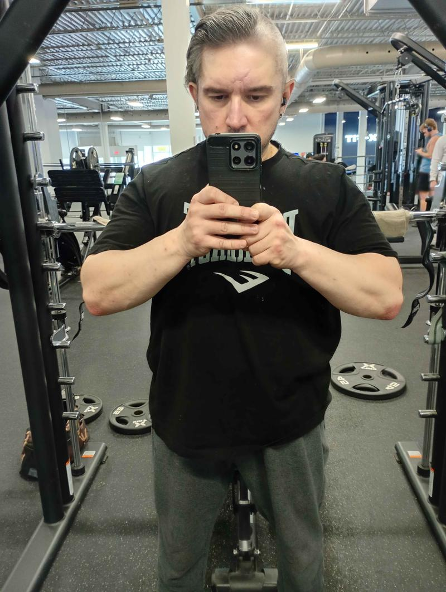
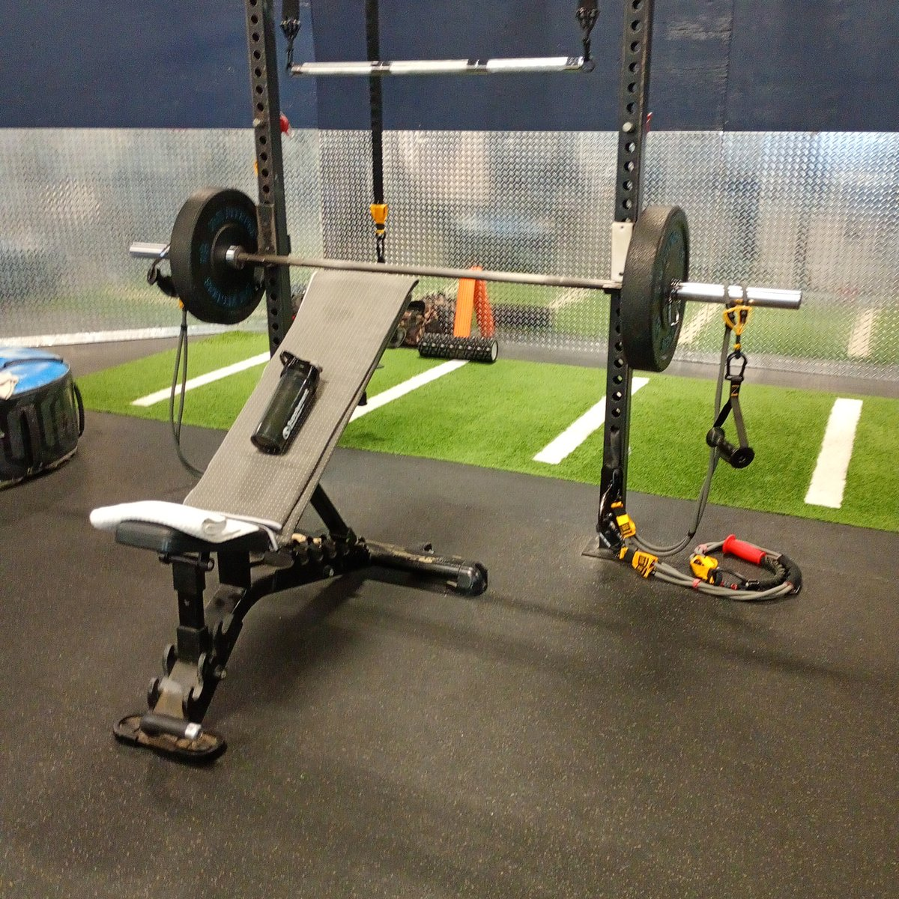
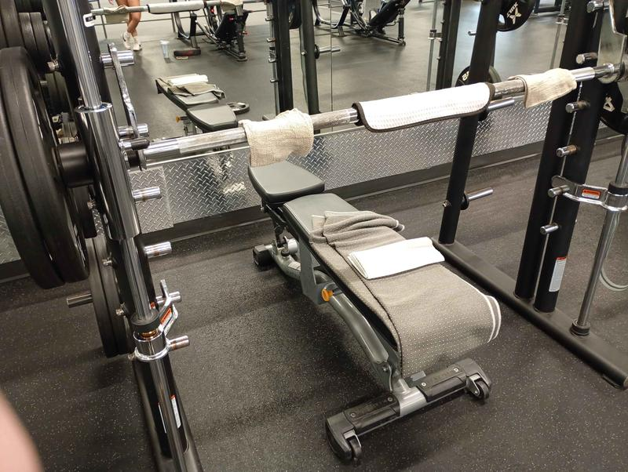
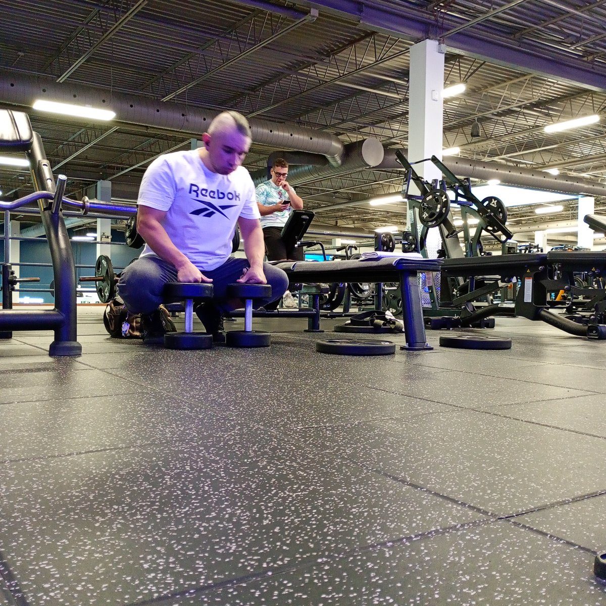
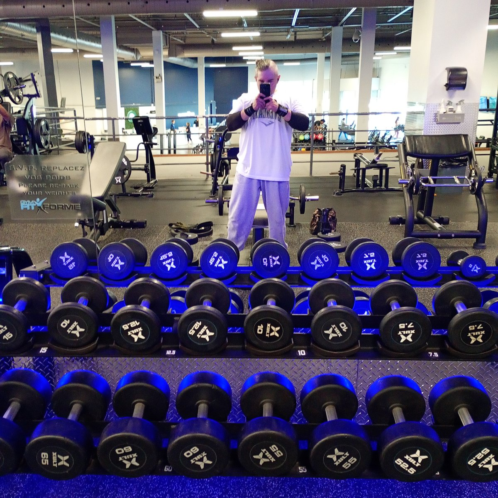
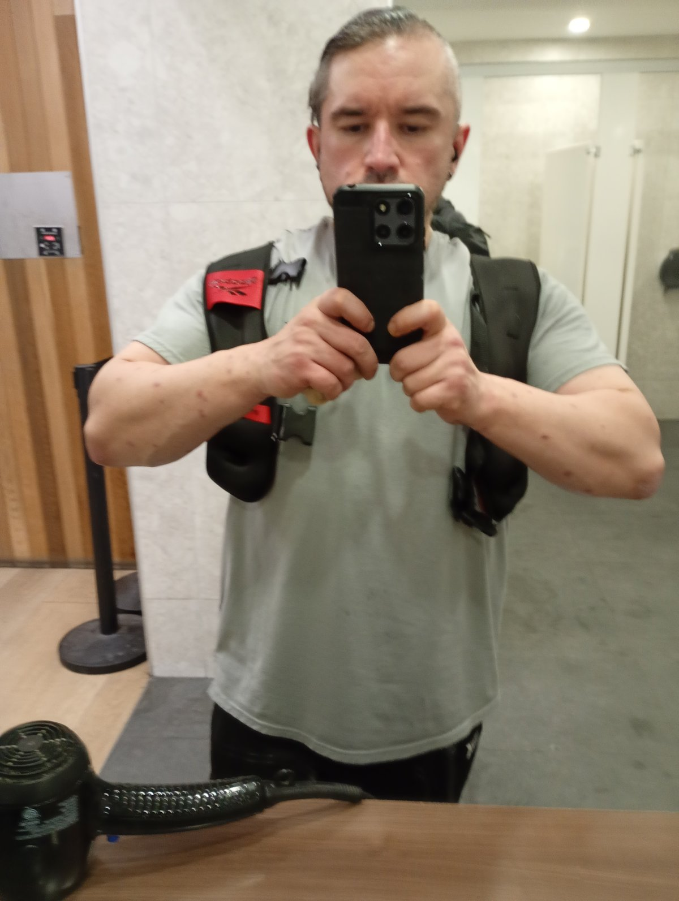

The system behind the goal.
The documented baseline, daily branches, training and fuel. Open a file below, or use the side arrows to move through Fit Protocol.
01 / 12 · V2.088.2 → 100 LBS OF MUSCLE.
Train like two. Eat for two. — not a double dose, a double commitment: sufficient food, sufficient recovery, no shortcuts.

Read the full source chapter →
Read the source chapter ↗02 / 12 · V2.0The architecture of return.
Heavy alcohol use from 2020 to 2025. Cessation in 2025. Renewed attention to health and gym training during 2026. The February publication’s baseline and the current profile are separate dated records.
Read the full source chapter →
Read the source chapter ↗03 / 12 · V2.0Durability is the method.
Measure honestly. Train repeatably. Eat with a record. Sleep. Let symptoms set the ceiling. A larger stack, longer session or bigger meal does not prove better adaptation.

Read the full source chapter →
Read the source chapter ↗04 / 12 · V2.0INTAKE × VECTOR × TIME.
Morning training and rest days are different branches. Clock times are reference anchors. Symptoms override the schedule.

| Anchor | Morning Training Branch | Rest Day Branch | Purpose / constraint |
|---|---|---|---|
| 03:30-03:45 Wake Pack | TESTOFX (3 caps), Boron (3 mg), LactoBif 100 (1 cap, intermittent) | Same | Endocrine and GI primer. Zinc supplement removed. |
| 04:00 Wake Vector | Vector V3 RECOVERY | Vector V3 RECOVERY (when consumed) | Rapid amino acid delivery and green flush. |
| 05:00 First Meal | Roasted kasha breakfast, Earl Grey tea; Kyolic 104 (2 caps), NAC 900 mg, NMN 175 mg, Digestive Enzymes Ultra (1 cap) | Main meal; Digestive Enzymes Ultra (1 cap). Grid pills skipped on rest days. | Solid fuel carbohydrate baseline. |
Read the full source chapter →
Read the source chapter ↗05 / 12 · V2.0A recorded recipe. A defined branch.
Training: V3, V1, V2, V4 and V10. Rest: V3 when consumed, V5 if consumed, and V10. PUMP is preserved strictly as inactive reference.
Read the full source chapter →
Read the source chapter ↗06 / 12 · V2.0Repeatable loading. Honest recovery.
Supported rows, presses and machine work dominate where hardware locks require spinal protection. Free axial loading is progressed conservatively. Record setup, tempo and pain response.

Read the full source chapter →
Read the source chapter ↗07 / 12 · V2.0Food is a record, not a rigid ceiling.
Known totals are partial label calculations, not a measured whole diet. The historical 2,780 kcal, 252 g protein and 69 g fat figures are legacy planning figures.

Read the full source chapter →
Read the source chapter ↗08 / 12 · V2.0Statuses do not drift.
Zinc Supreme removed. Separate copper paused. Boron locked at one 3 mg capsule. Lunch and afternoon grids are skipped on rest days. Optional Medi-C and rare Hey Relax remain optional.
Read the full source chapter →
Read the source chapter ↗09 / 12 · V2.0Symptoms govern the session.
Progressive weakness, bowel or bladder change, saddle numbness, jaundice, significant abdominal pain, fainting or chest symptoms require assessment. They are not training variables.

Read the full source chapter →
Read the source chapter ↗10 / 12 · V2.0Golden data recap.
One source of truth. One daily branch. No silent re-adds. Review the master dose record, the cascades and the laboratory disclosures together.
| Substance | System exposure | Reference limit | Margin verdict |
|---|---|---|---|
| Caffeine (training morning, incl. tea) | About 413-443 mg | Health Canada 400 mg/day | At or above guidance. Sleep governs. |
| Supplemental magnesium | 341 mg baseline; up to 646 mg with optionals | UL 350 mg/day supplemental | Baseline at UL; optionals exceed. Expect osmotic effect. |
| Vitamin C (with half Medi- C) | Baseline plus 1,000 mg | UL 2,000 mg/day | Within UL; GI effect is the practical limit. |
Read the full source chapter →
Read the source chapter ↗11 / 12 · V2.0The book behind the system.
Encyclopedia V2.0 is the single master volume. Read it free online or get the delivered PDF, Guidebook, Simplified Structure and editable Marketing Slider.
Read the full source chapter →
Read the source chapter ↗12 / 12 · V2.0One link. Every channel.
Training sessions, food records and protocol updates belong to one documented project. Follow the lived record at @fudge_fit.

Start Here ↗
Who Bogdan is, the return, the baseline numbers, and the system on one screen.
Door 2 · The bookGo Deep ↗
The Encyclopedia V2.0: 12 chapters, Parts III–VI and both annexes, unabridged and free.
Door 3 · DailyRun It Daily ↗
Training or rest day, the clock, the vectors, and the fixes. Read or print the daily manual.
Read the full source chapter →
Read the source chapter ↗